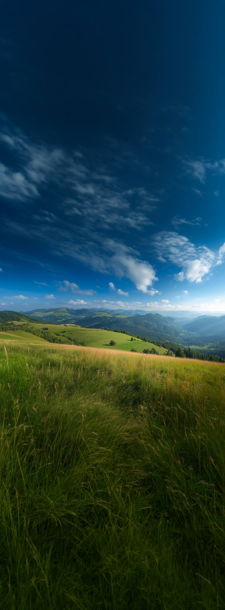

A voice controlled desktop assistant for Windows.
Not built yet. Join the waitlist and I will tell you when it is ready.
You hold a hotkey, say what you want, and it operates your computer for you.
Hold Ctrl + Space and say what you want.
The lens
The lens sits on your screen and tells you what Alalay is doing right now. Pick the look you like. All three say the same seven things.
Let us see how it works. Let us give it one real, simple task.
One real task, start to finish. Scroll to watch it run.
This is Alalay doing a real task. We are still building it, so this is what it will look like when it is done.
What makes it different
Where it stands